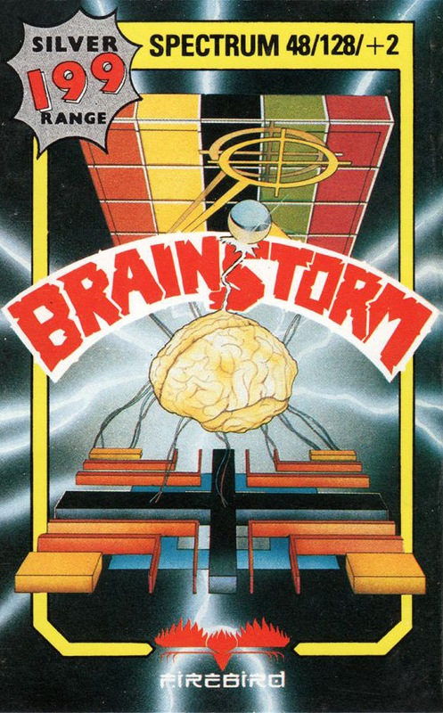
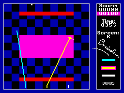
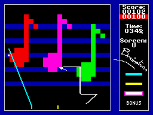

Brainstorm


{kind=link}

| Publisher: | Firebird |
| Price: | £1.99 |
| Year: | 1987 |
| Source: | CRASH, Issue 52 |

Brainstorm is a journey into an arcade strategy game, in which the player uses his wits and reflexes to survive the many devious traps and pitfalls of the game. The main objective is to score as many points as possible within a set time limit. This is achieved by trapping a ball within the red point scoring areas scattered around the screen, using manoeuvrable coloured lines.
The player is initially faced with several options: to play the game, view the high scores, redefine control keys, and to choose one of five starting screens and three difficulty levels. Once these decisions have been made, the battle commences. There are 26 screens, lettered from A to Z, each more difficult to complete than the last.

The playing screen is split into coloured squares, with the player in control of three coloured lines and a cursor. The squares are coloured either red, green, magenta, blue or black. Hitting a red square increases the player’s score, magenta squares decrease the player’s score, green warps the ball to a different part of the screen, and both black and blue squares are neutral, affecting neither the ball nor the scoreline.
The player has to trap the ball, using one or all of the lines (accessed by positioning the cursor over the desired colour box, and hitting the fire button), within reach of a red area of the screen, whilst attempting to avoid either the magenta or green parts. The player is provided with 100 points, and a target score, highlighted in red, of 100 points. As the game progresses the current score rises and falls, according to the ball’s path across the screen. The ultimate aim is to end the time limit with the current score matching or exceeding the target. If the score drops below the target, however, the colour of the target score changes from red to magenta. If more points aren’t scored pretty damn pronto, the game ends.
Once the appropriate amount of points are scored, the player is then whisked onto the next screen and his previous score is transformed into the start-of-level score and target. This carries on throughout the game, and if the player’s score reaches zero, or the current score falls below the target, then the game ends.
CRITICISM

“A game with a brain, innovative, and just for once not a clone, is a rare and exceptional occurrence. Deviously difficult patterns arranged in bold contrasting colours are designed to get the sleepiest brain cells tingling; you can never re-position a line to the exact pixel so no two games can be precisely the same. Presentation is slick but purely functional — puzzleability is all and three stages of difficulty including a myriad of tessellated patterns should keep you hooked for ages. Simple ideas are often the best; in this case originality wins over technical complexity to create an immediately playable and startlingly addictive same.”
KATI
“If you are into brain teasers that frustrate and blow your mind then Brainstorm is the game for you. The graphics, colour and sound may not be up to much and the idea behind it is ridiculously simple but the game sure makes up for these losses with addictiveness and playability. You just ring the red block with one of the three colours and then wait for your victim to walk into your trap. The only trouble is, the balls have a mind of their own: one second they may be on the red background but the next they’re on a purple and losing points! Brainstorm is wickedly addictive; play it and you’ll never put your joystick down again!”
NICK
“We’ve had Thrust, Harvey Headbanger and Zolyx (only successful on the C64, however) from Firebird, and now there’s Brainstorm — the latest in a famed list of simple-but-addictive Firebird games. Pete Cooke (programmer of Tau Ceti, Academy and Micronaut One) shows exactly how successful a Spectrum game can be if you concentrate on the addictiveness and playability — not the graphics and sound. There’s not much you can say about Brainstorm — it’s very addictive, entertaining and surprisingly simple to get into. Very few games appeal to all games players, but I would venture to say that this is one such product. Another game that every Spectrum owner should have.”
PAUL
COMMENTS
| Joystick: | Cursor, Kempston, Sinclair |
| Graphics: | Colour is an integral part of the game, and is well used |
| Sound: | Simple spot effects |
| Options: | Three levels of difficulty, choice of four starting screens |
| General rating: | The simple ones last longest, and you’ll be playing this for months to come. £1.99 for so much pleasure — you can’t go wrong |
| Presentation: | 80% |
| Graphics: | 57% |
| Playability: | 91% |
| Addictive qualities: | 92% |
| Overall: | 90% |